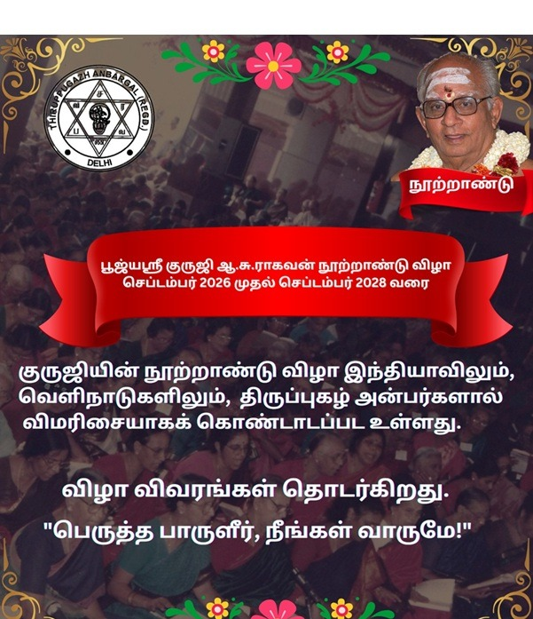
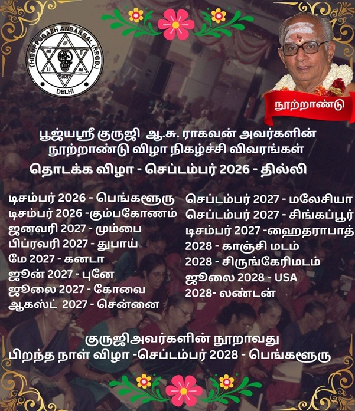
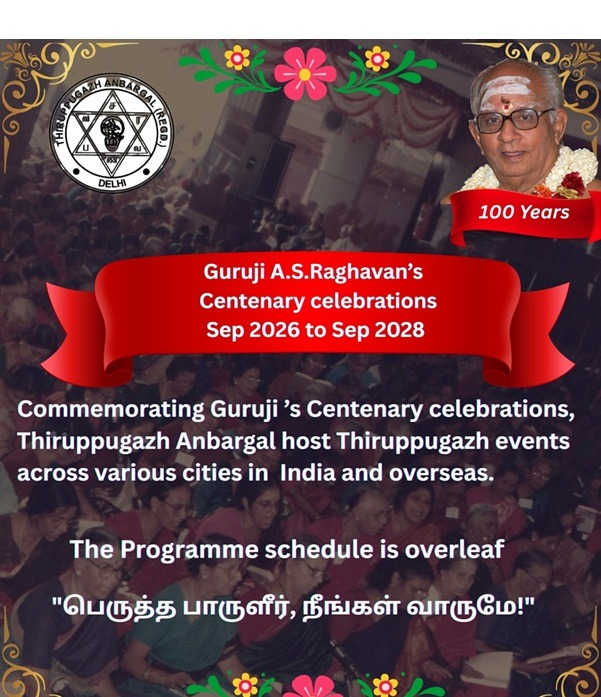
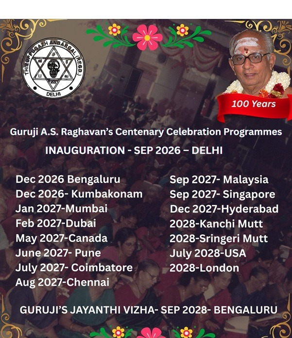

Guruji Centenary Celebrations
Celebrating 100 Golden Years of Devotion and Harmony (1928 - 2013)
2026 — 2028
30+ Cities
Participating in India
15 Cities
Participating Overseas
Milestones & Journey
24.05.2025
Committee Formation
The Guruji Centenary Committee was formally established to oversee all global celebrations.
Sept 2026
Inaugural Function — New Delhi
A grand opening ceremony to mark the beginning of the two-year worldwide celebration.
2026 - 2028
Global Celebrations
Events scheduled across 10 major centres in India and 6 key centres overseas throughout the intervening two-year period.
Sept 2028
The Grand Finale
Culmination of the centenary celebrations with a massive gathering to honour Guruji’s legacy.
Sub-Committees
🎥 Documentary Committee
- Documentary Film
- Paddhati Video
- Official Banner & Poster
- Inaugural Invite & Brochure
📖 E-Souvenir Committee
- Collection of articles on Guruji & Thiruppugazh
- Blessings from Sringeri & Kanchi Swamigal
- Launch of E-Book at Inaugural Function
- Regular Supplements for every major event
📅 Program Committee
- Global Coordination of Dates & Venues
- Avoiding scheduling overlaps between cities
- Ensuring Anbargal can attend all major functions
🎵 Song List Committee
- Comprehensive coverage of all 503 songs
- Strategic selection for the 8 primary Bhajans
- Ensuring diverse song sets without major overlaps
Centenary Media & Visuals
Official assets for the 2026-2028 celebrations.
Tamil Content

Celebration Intro (Tamil)

Programme Details (Tamil)
English Content

Celebration Intro (English)

Programme Details (English)